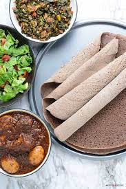

Injera

Description
Injera, the national dish of Ethiopia, is a delicious spongy sourdough bread made from teff flour.
Ingredients
- 3 cups teff flour
- 1 cup all purpose flour
- 1 tsp salt
- 1/2 tsp dry yeast
- ½ tsp baking powder
Steps
- Add yeast to ½ cup room temperature water in a large
bowl and mix together until foamy. Add teff and all
purpose flour to the bowl along with salt, baking powder,
and 2.5 more cups water. Stir until a uniform mixture.
- Cover the bowl loosely and let sit/ferment at room temp
for 2 days. During this time, the water and flour will
naturally separate a bit, bubbles will start to form, a
nd it will start to smell slightly sour
(this is a good sign, just like making s
ourdough bread).
- After 48 hours, uncover bowl and stir to combine.
The desired consistency is thicker than a crepe
mixture but thinner than a pancake mixture. You
may need to add a bit more water to reach this
consistency.
- Place a large nonstick pan (that comes with a lid)
on the stove on medium-high heat and spray with some oil.
Ladle in enough of the mixture to just barely coat the
bottom of the pan. Cook for about 30 seconds or until
bubbles are forming and then cover with a lid to steam.
Let steam for about 1-2 minutes or until the center
looks cooked through.
- Set aside injera to cool and repeat this process
for the remaining mixture.